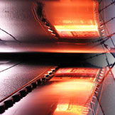
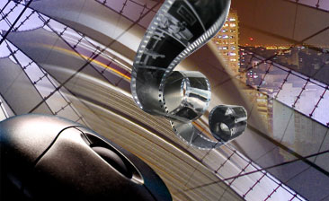

Missão
Oferecer aos nossos clientes um trabalho exclusivo direcionado para o tratamento de imagem mantendo total fidelidade ao projeto original, partindo de diferentes processos, tais como: Cromo, Negativo, Fotos Digitais e Originais Opacos.

A Elo Precisão Digital é uma empresa de prestação de serviço na área de pré-impressão digital para projetos editoriais e publicitários.
Contamos com profissionais altamente qualificados e que possuem mais de doze anos de experiência no segmento.
Objetivo
Fornecer aos nossos clientes serviço de qualidade, sempre cumprindo rigorosamente os prazos estabelecidos.
Desta forma estabelecendo um relacionamento de confiança e de transparência.
A Elo Precisão Digital garante a qualdade e sucesso na comunicação dos seus projetos.